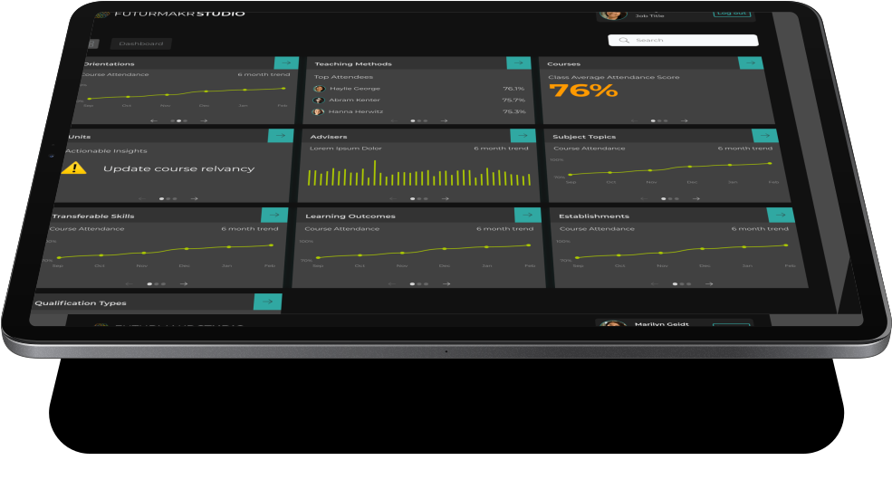

Cutting-edge
education for
self-actualisation

FuturMakr is the only end-to-end, holistic,
talent development system on
the
market.
Powered by the latest AI technology and trained by some of the foremost figures shaping industry and education today, FuturMakr guides students through a bespoke and in-depth user-journey to develop the habits, skills, knowledge, connections and work opportunities needed to succeed in their chosen field.
...
...
...